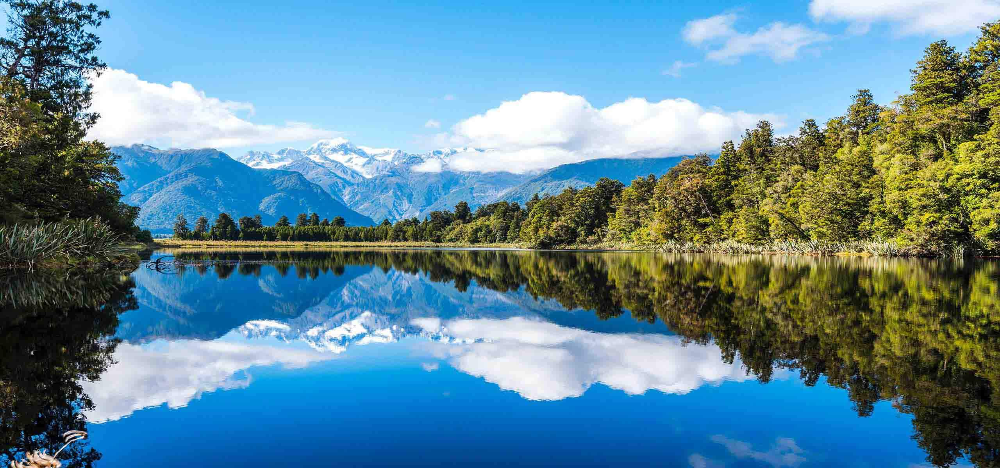

知識庫(1)
自然篇

自然聲音
自然聲音包括動物（從蟋蟀到哺乳動物）發出的聲音，也包括自然現象發出的聲音，如水聲、風聲。水聲有雨滴落在地面或水面產生的聲音、瀑布的聲音、流水的聲音、海浪拍打岩石的聲音等等。風聲有風颳落葉的聲音、呼嘯聲等。在大自然，通常能聽到水聲和風聲摻雜在一起。這些聲音對史前音樂的發展大有幫助，對當今具有重要的文化參考價值。
Nature Sounds

播放"音樂"


鄉村雨聲
趴倒窗台上，捲起小紙窗簾聽蟬鳴，這樣聽得更真切，無隔閡。院裡栽了大大小小的許多樹，引來鳥叫、蝶舞、蟬蜂鳴。知了聽著雞叫聲就驟然醒來，扯起喉嚨，放聲歌唱，叫個不停。「吱、吱、吱」，有時還拉著長韻叫著，接著就聽著三五個知了一齊在小院裡叫，分布在不同的角落，而就是不知在哪棵樹上叫。細辯是叫得美妙動聽的「烏悠」聲，這種知了叫起來婉轉、抑揚頓挫。「烏悠、烏悠、烏悠、完，烏悠完，烏悠、烏悠完，烏悠……」
Rural Sounds
播放"音樂"

播放"音樂"
水之聆聽
水是生命之源，它以不變呈萬態，自古以來，「水」就是中外藝術家們創作的靈感源泉。「泉眼無聲惜細流」，有「飛流直下三千尺」，也有「一千頃，都鏡淨，倒碧峰。忽然浪起，掀舞一葉白頭翁」等等。音樂中有「高山流水」、「江河水」，甚至「寒鴉戲水」……水是大道，是智慧。白居易有句詩：「動者樂流水，靜者樂止水。利物不如流，鑒形不如止。」其實西方的古典音樂家們都有不少關於「水」的音樂作品，今天我們來聽2首非常動聽的「水」之曲。
Water Listening